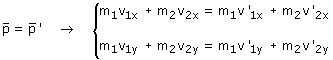

Conservación del momento lineal Cuando chocan dos cuerpos, que no están sometidos a fuerzas exteriores, el momento lineal (Vector) se conserva.  ¡Cuidado! Para aplicar la conservación del momento hay que tomar dos situaciones: un pelin antes del choque y un pelin después |